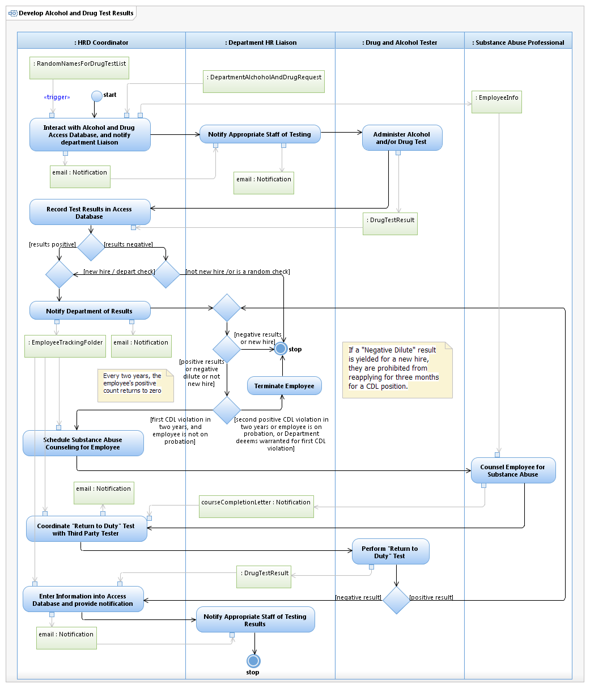

Use Case Model: Develop Alcohol and Drug Test Results

Use Case Model: Develop Alcohol and Drug Test Results
Architect: Aaron Brown, IT Enterprise Architect Senior
Date Last Modified: 3/6/2013
User Review: Reyna Ruiz, Sandra Schirmer, Steven Dixon, Debbie Willms, Howard Hendrickson
Date: 3/5/2013
Establish Drug and Alcohol testing and potentially notifying the Department HR Liaison of specific test results. A Third Party Generates a list of people (random names) monthly of which employees need to be tested, to be in Federal compliance. Additionally, some departments can request Drug Tests for pre-employment hiring, post Leave test, purposes. If a current CDL Employee is found to be using drugs or alcohol based on test results, they are referred to a substance abuse treatment program.
Follow link to Role Definitions
Use Case Model: Develop Alcohol and Drug Test Results

Activity Model:
Develop Alcohol and Drug Test Results
Activity Documentation
| Activity | Documentation |
|---|---|
| Dialog with Alchohol and Drug Access Database, and notify department Liaison | This communicates with Banner, and is searched by using the Social Security Number, Last Name, First name or even the Employee Number, based on the testing situation. |
| Coordinate Return of Duty Test with Third Party Tester | They create a "folder" for the employee when a positive occurs. |
Note: When the activity is self explanatory no documentation is provided.